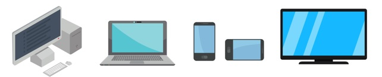

Esses computadores eram gigantes! Eles ocupavam salas inteiras e tinham um monte de tubos de vácuo que faziam o trabalho. Eram superlentos em comparação com os computadores de hoje e podiam fazer apenas uma coisa de cada vez, como fazer cálculos matemáticos ou resolver problemas científicos. A programação era feita de forma bastante complicada usando interruptores e fios. Mas, na época, eles eram uma maravilha da tecnologia e abriram caminho para os computadores modernos que temos hoje.
A segunda geração de computadores, que veio nos anos 1950 e 1960, trouxe algumas melhorias bacanas: Aqui, os computadores ficaram um pouco menores, mas ainda eram bem grandalhões. A grande novidade foi que eles começaram a usar transistores em vez dos antigos tubos de vácuo. Isso os tornou mais confiáveis, menos quentes e mais rápidos. Eles ainda eram usados principalmente por empresas e universidades para fazer cálculos complicados e processar dados.
A programação também melhorou um pouco, mas ainda era bastante técnica. Então, enquanto esses computadores eram uma evolução em relação à primeira geração, ainda estávamos longe dos PCs e laptops que temos hoje.
A terceira geração de computadores, que apareceu nas décadas de 1960 e 1970, trouxe mais avanços emocionantes: Agora, os computadores começaram a ficar menores, mais rápidos e mais poderosos. E a razão principal para isso foi a invenção dos circuitos integrados, também chamados de chips. Imagine que antes você tinha várias peças separadas no seu computador, mas agora elas estavam todas em um único chip, o que tornava tudo muito mais eficiente.
Essa geração também viu o surgimento de linguagens de programação mais amigáveis, como o COBOL e o FORTRAN, o que facilitou muito a vida dos programadores. As empresas começaram a usar computadores para gerenciar informações e processar dados de maneira mais eficaz.
Portanto, a terceira geração de computadores nos trouxe um passo mais perto dos computadores pessoais e da tecnologia que usamos em nossas casas e escritórios hoje em dia.
A quarta geração de computadores, que surgiu a partir da década de 1980, trouxe uma revolução incrível:
Nessa época, os computadores começaram a ficar pequenos o suficiente para caber em escritórios e casas. Eles eram muito mais rápidos e poderosos do que os modelos anteriores. Isso foi possível graças aos microprocessadores, que eram como cérebros minúsculos que faziam todo o trabalho pesado.
Os computadores pessoais se tornaram populares, com nomes como IBM, Apple e Microsoft liderando a revolução. As interfaces gráficas de usuário (GUIs) tornaram a interação com os computadores mais fácil, com ícones e janelas que podíamos clicar e arrastar.
A quarta geração também viu o surgimento dos laptops, o que significava que você podia levar seu computador para onde quisesse. Além disso, os jogos de computador se tornaram uma grande coisa, com gráficos melhores e mais emocionantes.
Em resumo, a quarta geração de computadores trouxe computadores pessoais acessíveis para nossas vidas cotidianas e mudou a forma como trabalhamos e nos divertimos com a tecnologia.
A quinta geração de computadores é bem interessante:
Nesse período, que começou mais ou menos nos anos 90 e continua até hoje, vimos avanços incríveis na inteligência artificial (IA). Os computadores começaram a aprender e a tomar decisões por conta própria, algo que antes só os humanos faziam.
Isso permitiu coisas como assistentes virtuais, como a Siri e a Alexa, que podem responder às nossas perguntas e realizar tarefas simples. Além disso, a IA é usada em carros autônomos, tradução de idiomas, diagnóstico médico e muito mais.
Os computadores também ficaram menores e mais poderosos. Os smartphones se tornaram uma parte fundamental de nossas vidas, sendo usados para praticamente tudo, desde fazer chamadas até navegar na web e jogar jogos. Eles são como pequenos computadores superpoderosos que carregamos no bolso.
Portanto, a quinta geração de computadores nos trouxe um mundo onde a inteligência artificial é parte integrante de nossa vida cotidiana e a tecnologia continua a avançar rapidamente.
Tudo começou como um projeto militar nos EUA nos anos 1960, chamado ARPANET. Eles queriam criar uma rede de computadores que pudesse sobreviver a um ataque nuclear. Então, eles conectaram alguns computadores em lugares diferentes usando linhas telefônicas.
Com o tempo, a ARPANET cresceu e se tornou a base da internet. Outras redes se juntaram a ela, e logo as pessoas perceberam que poderiam enviar mensagens e compartilhar informações com outras pessoas através dessa rede.
Na década de 1990, a World Wide Web (WWW) foi inventada, o que tornou a internet mais fácil de usar. Agora, podíamos navegar em páginas da web, enviar e-mails e fazer muitas outras coisas incríveis online.
A internet se espalhou pelo mundo todo, e hoje em dia, praticamente todos nós a usamos para tudo, desde pesquisar informações até compartilhar fotos e vídeos. Ela se tornou uma parte fundamental de nossas vidas e da maneira como nos conectamos com o mundo.
< VoltarUm Client é basicamente um dispositivo, programa ou pessoa que solicita e recebe informações ou serviços de um servidor. É como se fosse alguém fazendo um pedido em um restaurante: o cliente pede algo, e o servidor (que é como o cozinheiro) prepara e entrega.
Principais características de um cliente:
Em resumo, o cliente é o "usuário" ou "solicitante" de informações ou serviços em um ambiente computacional, enquanto o servidor é como o "fornecedor" que atende às solicitações do cliente. Eles trabalham juntos para tornar a internet e muitos outros serviços online possíveis.
Usando a mesma metáfora, um "servidor" é como o chef de um restaurante online. Ele é o computador ou programa que está lá para atender aos pedidos dos clientes (outros computadores ou programas) e fornecer informações ou serviços.
Principais características de um servidor:
Em resumo, um servidor é como o "anfitrião" que fornece recursos e serviços para os clientes (outros computadores ou programas) que desejam acessar informações ou funcionalidades específicas pela internet ou em uma rede local. Eles desempenham um papel fundamental na infraestrutura da computação e da internet.
A estrutura básica de HTML é como um esqueleto para criar páginas da web. Aqui está uma explicação coloquial e resumida:
Dentro do <body>, você pode adicionar coisas como:
Essa é uma estrutura HTML básica que você pode usar como ponto de partida para criar suas páginas da web. Você adiciona seu conteúdo dentro do <body> e usa outras tags para formatar e organizar esse conteúdo.
As diferenças entre listas ordenadas e não ordenadas são:
Lista Ordenada:
Imagine que você está fazendo uma lista de tarefas importantes. Você escreve cada item com um número na frente, como "1. Comprar leite" e "2. Pagar contas". Nesse caso, os números mostram a ordem das tarefas, e isso é uma lista ordenada. É como se cada item tivesse seu lugar na fila, do mais importante para o menos importante.
Exemplo em HTML:
< ol >
_< li > Comprar leite < /li >
_< li > Pagar contas < /li >
< ol >
Resultado
Lista Não Ordenada:
Agora, imagine que você está fazendo uma lista de compras, mas não se importa com a ordem em que vai pegar os itens no supermercado. Você escreve os itens, mas não os enumera com números. É uma lista onde os itens estão lá, mas não existe uma ordem específica em que você precisa segui-los.
Exemplo em HTML:
< ul >
_< li > Maçãs < /li >
_< li > Pão < /li >
_< li > Leite < /li >
< /ul >
Resultado
Então, a principal diferença é que uma lista ordenada tem números ou letras que indicam uma sequência específica, enquanto uma lista não ordenada apenas lista os itens sem uma ordem particular. É como fazer uma lista de tarefas com prioridades (ordenada) ou apenas uma lista de coisas para lembrar (não ordenada).
Aqui estão alguns sites que são ótimos recursos para aprender mais sobre a história da web e os comandos HTML:
Esses sites oferecem uma combinação de recursos educacionais, referências e informações históricas relacionadas à web e ao HTML. Eles são úteis tanto para iniciantes que desejam aprender HTML quanto para aqueles que desejam entender melhor a história da internet e do desenvolvimento da web.